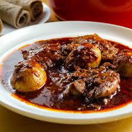

Doro Wat

- 1 cup butter, divided
- 1 onion, choped
- 2.5 cups water, divided
- 1 (6 ounce) can tomato paste
- .75 cup berbere seasoning
- 1 teaspoon chopped garlic
- .5 teaspoon ground ginger
- 4 skinless, boneless chicken breasts, cubed
- .33 cup sweet white wine
- .5 teaspoon ground cardamom
- .5 teaspoon freshly ground black pepper
- 4 hard-boilded eggs
-
Heat 1/2 cup butter in a skillet over medium-low heat.
Cook and stir onion until translucent, 5 to 6 minutes.
Add 1/2 cup water and tomato paste; stir until hot,
about 2 minutes. Stir in remaining butter, berbere,
garlic, and ginger. Adjust heat to low and cook until
mixture thickens to paste consistency, 20 to 30 minutes.
-
Stir remaining water into berbere paste; add chicken.
Simmer until thickened to sauce consistency, about 45 minutes.
-
Stir white wine, cardamom, and black pepper into the sauce;
add hard-boiled eggs. Cook until sauce is reduced slightly,
about 15 minutes more.